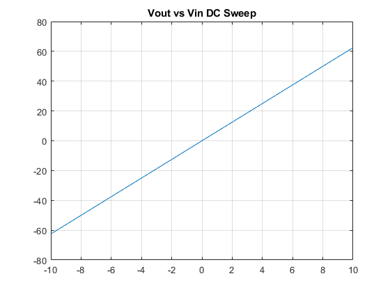
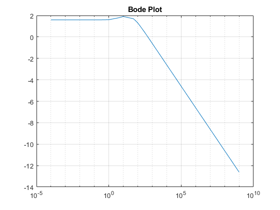
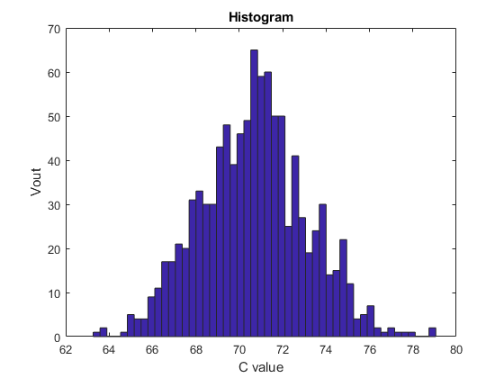

Assignemnt 4 Part 1: Formulation of MNA Analysis Base
Contents
Part 1
clc
Parameters
G1=1/1; C2=0.25; G2=0.5; L=0.2; G3=0.1; G4=100; G5=1/1000; ALPHA=100; Vin=10; vx=-10;
Construction of G, C and F matrix
%X=[V1 Iin V2 V3 V4 V5 IL I4] G=[-G1,1, G1, 0,0,0,0,0; ... G1,0, -G1-G2,0,0,0,-1,0;... 0,0,0,-G3,0,0,1,0;... 0,0,1,-1,0,0,0,0;... 0,0,0,0,0,G4,-ALPHA*G4,1;... 0,0,0,0,0,-G4-G5,ALPHA*G4,0;... 1,0,0,0,0,0,0,0; 0,0,0,0,1,0,-ALPHA,0]; C = [-C2,0,C2,0,0,0,0,0;... C2,0,-C2,0,0,0,0,0;.... 0,0,0,0,0,0,0,0;... 0,0,0,0,0,0,-L,0;... 0,0,0,0,0,0,0,0;... 0,0,0,0,0,0,0,0;... 0,0,0,0,0,0,0,0;... 0,0,0,0,0,0,0,0]; F=[0 0 0 0 0 0 vx 0];
1. DC Sweep from -10 to 10 volts
vinval=[-10,-8,-6,-4,-2,-0,2,4,6,8,10]; voutval=zeros(11,1); v3val=zeros(11,1); for i = 1:11 vx=vinval(i); F=[0 0 0 0 0 0 vx 0]; V=inv(G)*F.'; voutval(i,1)=V(6); v3val(i,1)=V(4); end figure(1) plot(vinval,voutval) title("Vout vs Vin DC Sweep") grid on figure(2) plot(vinval,v3val) title("V3 vs Vin DC Sweep") grid on
2. AC Plot (Bode plot)
w=[0.0001,0.0005, 0.001, 0.005, 0.01,0.05, 0.1,0.5, 1,... 5, 10,50,80, 90, 100,130,300, 500,800, 1000, 10000, 100000, 1000000,10^9]; voutval=zeros(24,1); gain=zeros(24,1); for i = 1:24 vx=10; F=[0 0 0 0 0 0 vx 0]; wtemp=w(i); V=inv(G+1i*wtemp*C)*F.'; voutval(i,1)=20*log10(V(6)/10); gain(i,1)=voutval(i,1)/V(1); end figure(3) semilogx(w,gain) title('Bode Plot') grid on
Warning: Imaginary parts of complex X and/or Y arguments ignored
3. Monte Carlo Simulation of Capacitance
vx=10; F=[0 0 0 0 0 0 vx 0]; Carray=normrnd(0.25,0.05,1,1000); voutval=zeros(1000,1); for i = 1:1000 C2=Carray(i); C = [-C2,0,C2,0,0,0,0,0;... C2,0,-C2,0,0,0,0,0;.... 0,0,0,0,0,0,0,0;... 0,0,0,0,0,0,-L,0;... 0,0,0,0,0,0,0,0;... 0,0,0,0,0,0,0,0;... 0,0,0,0,0,0,0,0;... 0,0,0,0,0,0,0,0]; V=inv(G+1i*pi*C)*F.'; voutval(i,1)=real(V(6)); end figure(4) hist(voutval,50) title('Histogram') xlabel('C value') ylabel('Vout')
Conclusion
This is a low pass filter, allowing signals with a frequency less than the corner frequency to be transmitted with a gain, beyond this frequency the signals are attenuated.